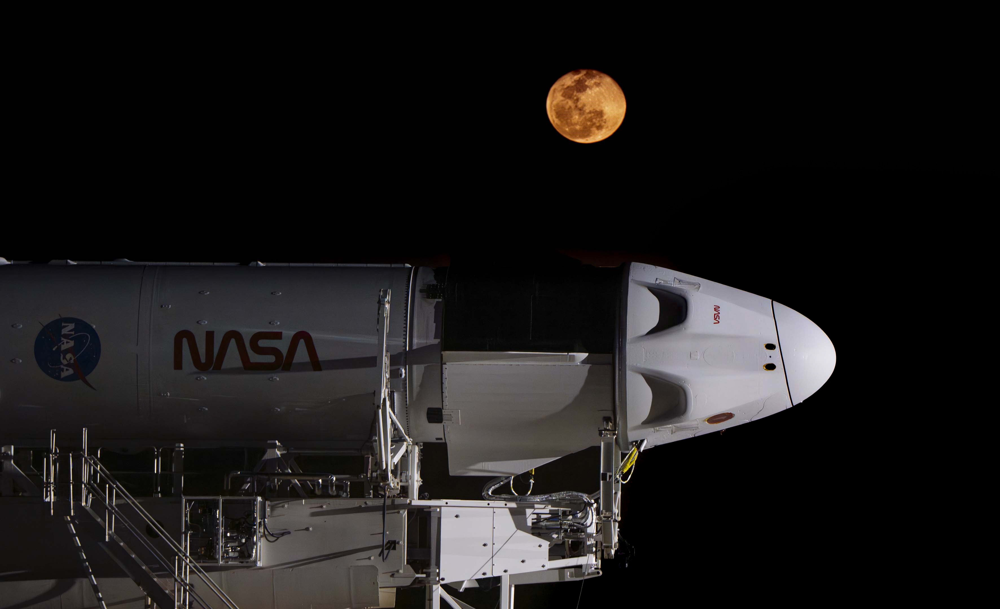
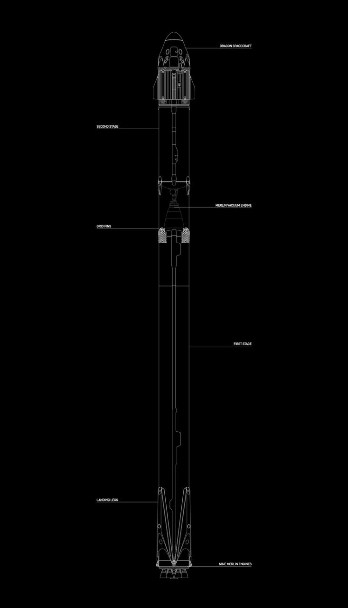
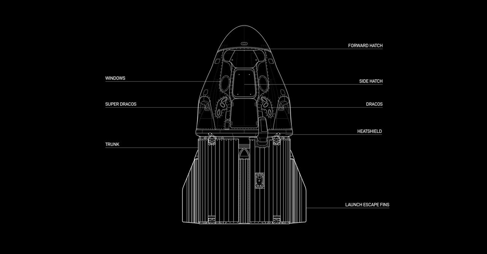

Our Vision
Establishing a self-sustaining human presence on multiple planets within our solar system, ensuring the long-term survival of humanity.

Our Mission
Design, manufacture, and launch advanced rockets and spacecraft with rapid reusability, dramatically reducing the cost of access to space.

Our Research
Pioneering breakthroughs in propulsion, life support systems, orbital mechanics, and autonomous spacecraft navigation.